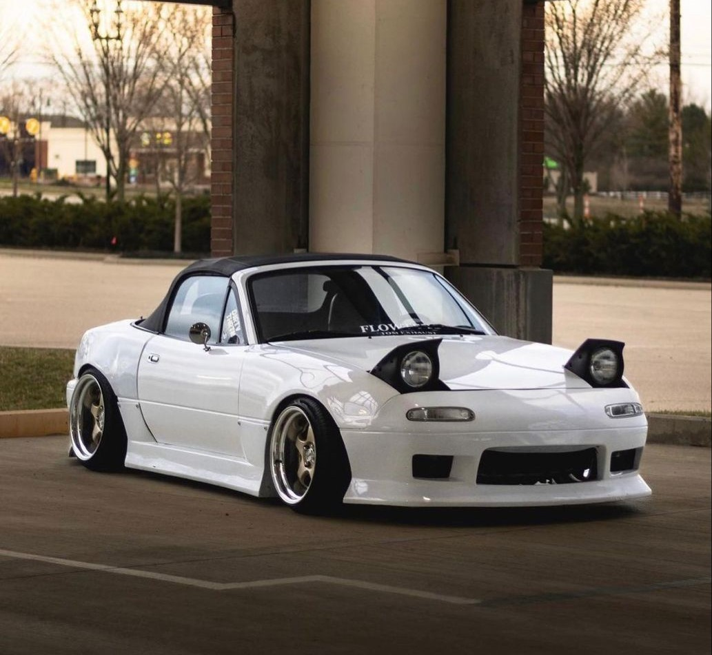

JAPANESE
LEGENDS
Каталог легендарных японских автомобилей, культовых двигателей и машин, которые сформировали JDM-культуру.
КАТАЛОГ АВТОМОБИЛЕЙ
06 CARS 01
01
NISSAN
SILVIA S15
2.0L SR20DET · RWD · 250 HP
 02
02
TOYOTA
SUPRA A80
3.0L 2JZ-GTE · RWD · 280 HP
 03
03
NISSAN
SKYLINE GT-R R34
2.6L RB26DETT · AWD · 280 HP
 04
04
TOYOTA
MARK II JZX100
2.5L 1JZ-GTE · RWD · 280 HP

05
MAZDA
MIATA NA
1.6L B6 · RWD · 115 HP
 06
06
TOYOTA
CELICA ST205
2.0L 3S-GTE · AWD · 255 HP